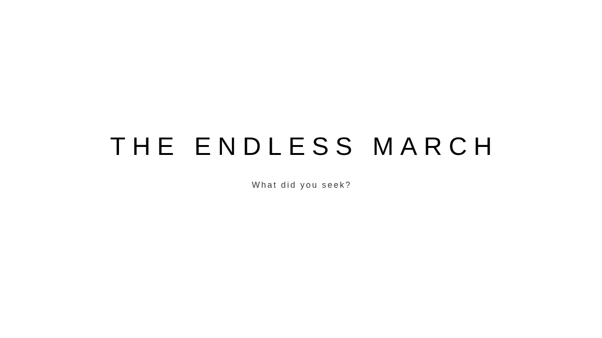
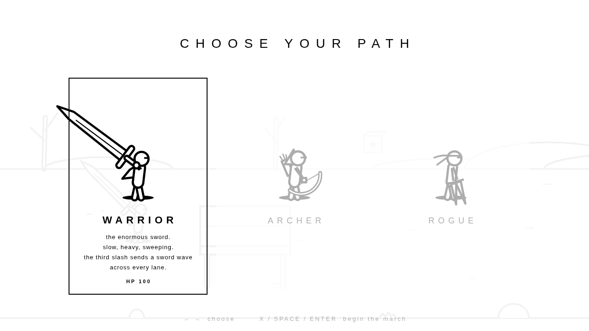

Art
Ink and paper
- The rules
- How a figure is drawn
- Figures
- The road
- Night, magic and the light
- Type and interface
- Realmwalker concept art
- Planned art
The rules
Two colours
Black #000 and white #fff. Grey only ever appears as something fading: a dimmed path on the class screen, a ghost of a dash, light washing over the world.
Everything is outlined
Anything with a body (people, creatures, weapons, pickups, buildings, rocks) is a white shape with a black outline, 2.5 units thick.
Solid black is for the floor
Shadows, dust, sparks and the ink that enemies rise out of stay solid black. They belong to the ground and to the moment, not to bodies.
Hits flip the ink
For the frame something is hit, its body fills solid black. It reads instantly without adding a colour.
Readability first
Every dangerous attack has a shape you can learn: a shaking body, a ring closing in, a dashed box or a dotted line on the floor.
Nothing is textured
No gradients on bodies, no hatching, no pixel art. The figures are built from a few lines, circles and polygons, drawn live in code every frame.
How a figure is drawn
The whole look comes from four drawing helpers in js/util.js, used by every figure, weapon and building:
| Helper | What it draws |
|---|---|
finish() | Fills the current shape white and strokes it with the black outline (or fills it black while flashing). |
limb() | A limb. Thin ones (arms, bowstrings, spear shafts) are plain stick lines. Thick ones (legs, torsos) are outlined tubes: a wide black line with a narrower white line inside it. |
box() | An outlined rectangle: shields, walls, the monolith. |
eye() | A small black mark: eyes, a slit window, the studs on the door. |
Figures overlap in the order they are drawn, back to front, so a torso's white fill neatly covers the top of the legs behind it. That is the whole trick.
Figures
Rendered straight from the game's drawing code.

Warrior
Cloak tail, sword nearly twice its height, a fuller down the blade.

Archer
Hood, quiver across the back, a recurve bow whose string pulls back as it draws.

Rogue
Slimmer torso, a headband with two tails, a dagger in each hand.

Seeker

Chaser

Brute

Axe thrower

Flyer

Splitter

Shielder

Assassin

Elite

Thief
Fire arrow
Flames are outlined too: three tongues that flicker at different rates.


Pot & bread
The road
The horizon is a single line. Above it, distant outlined structures drift past at half speed; below it, the floor is white with a few short marks that get heavier toward you; at the bottom, a ledge line with rocks and grass moves a little faster than you do. Each stretch of the road has its own horizon:
| Stretch | Waves | On the horizon |
|---|---|---|
| The plain | 1–3 | Low hills, bare trees |
| The ruins | 4–6 | Broken columns, arches, fallen blocks |
| The fortress | 7–9 | Crenellated walls, towers with flags and slit windows, rows of spears |
| The void | 10 | Almost nothing: a thin spire now and then. The view pulls back to make it feel larger. |


Night, magic and the light



Type and interface
One typeface (Helvetica Neue, falling back to Helvetica and Arial), mostly in light weights with wide letter-spacing. Titles are set in capitals. The HUD is small and sits in the top-left corner: wave and class, HP as ten blocks, magic as six flasks, lives as little figures, and the enemies left.

Realmwalker concept art
Concept art from the Realmwalker project sources, the planned art direction for future content. Images are added in docs/art/realmwalker/ (see the README there).
not added yet
not added yet
not added yet
Planned art
- Story panels: full-screen ink panels between chapters of the planned story mode, drawn with the same outline kit at a larger scale.
- More horizons: each story chapter gets its own stretch of road and skyline.
- Outlined animation frames for the hero's idle and victory poses, and a proper death fall for each enemy type.
- Accessibility: an optional thicker outline and larger HUD for small screens.